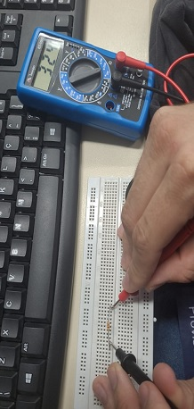
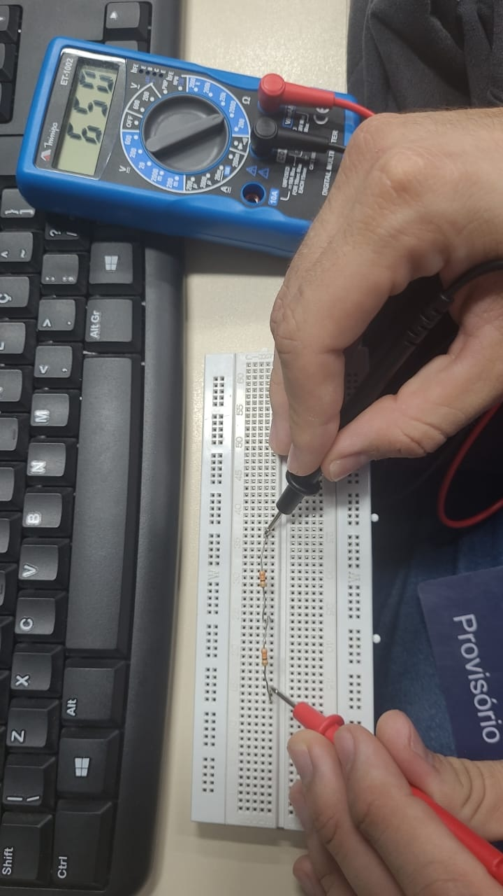
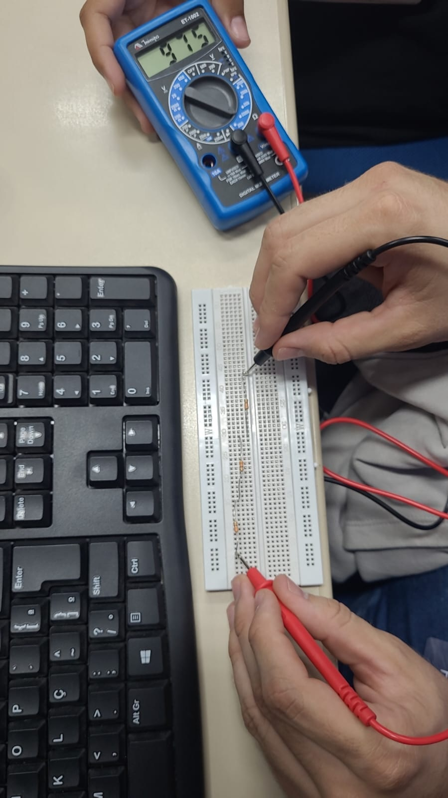
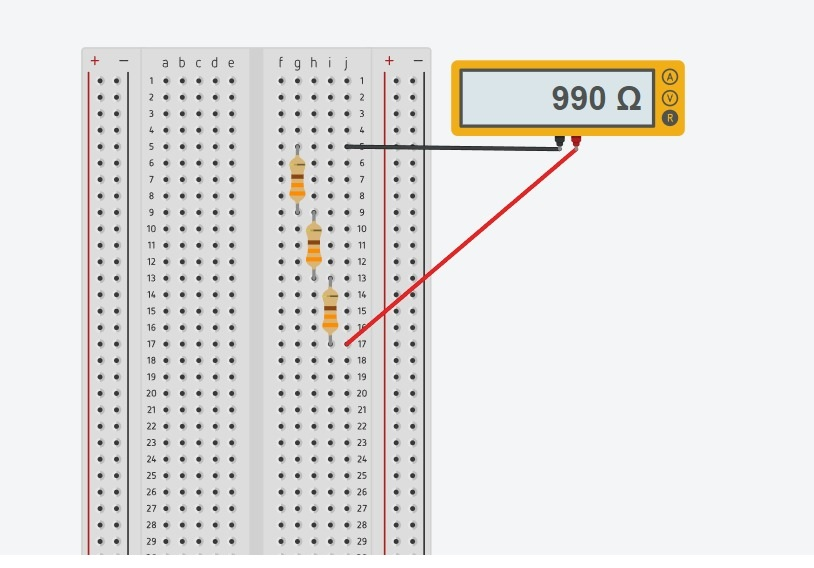
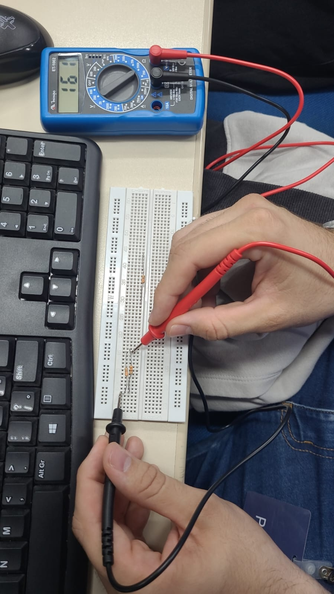
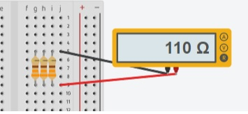
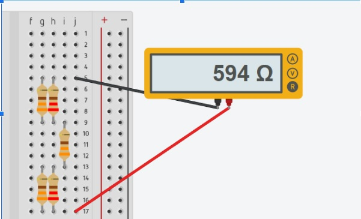

Aqui nós temos uma aula experimental ultilizando o Multimetro Digital para tirar a medição dos resistores
Primeiro Experimento: associação em série
resistor unico
associação em serie com 2 resistores
associação em serie com 3 resistores
Simulação no tinkercad
associação em paralelo, onde colocamos um resistor ao lado do outro
parelelo com 2 resistores
paralelo com 3 resistores
Simulação no tinkercad
associação mista, onde vai o em serie e o parelelo juntos
Simulação no tinkercad
